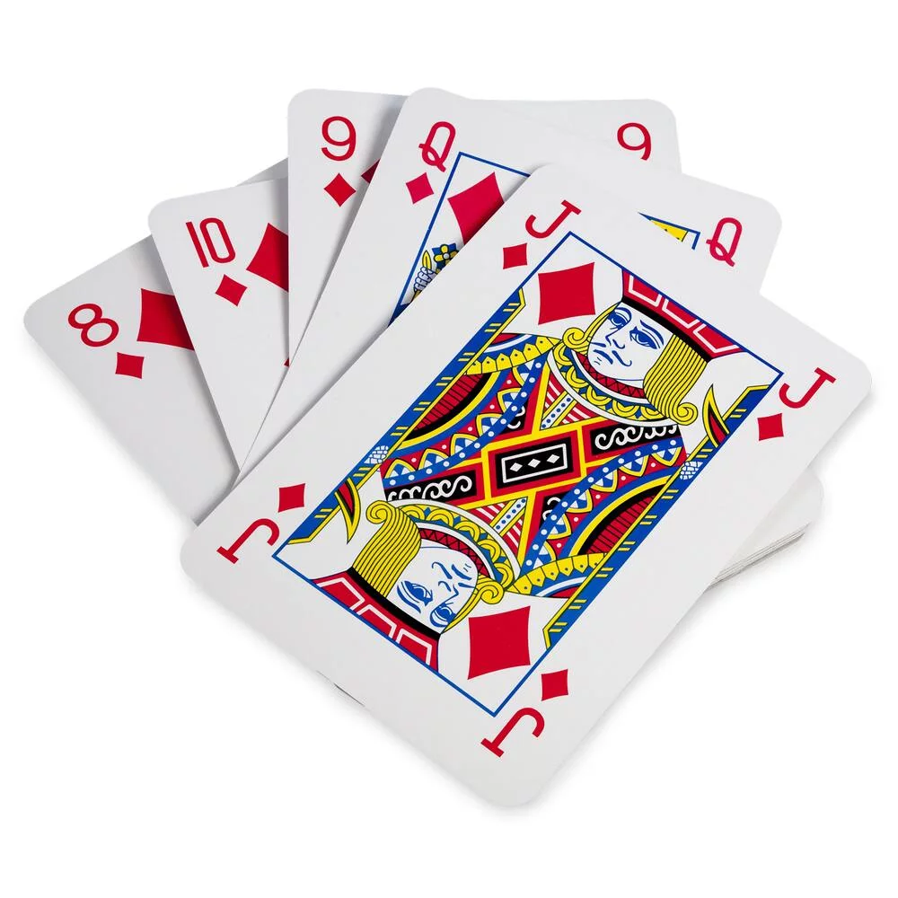
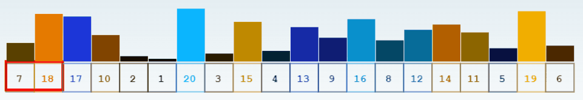
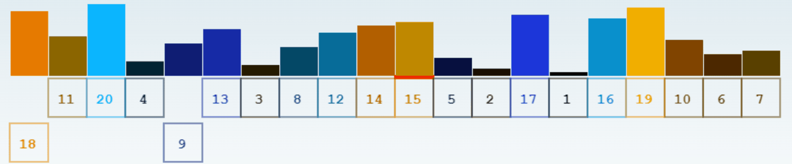

7. Les algorithmes¶
Mémento Python
Raccourcis clavier
Dans ce chapitre, nous allons découvrir quelques algorithmes récurrents en informatique. Nous allons surtout nous pencher sur le tri qui est une fonctionnalité fondamentale. L’énorme succès de Google est basé sur un tri efficace de l’information, car dans une liste triée, on peut retrouver un élément beaucoup plus vite.
Lorsque vous jouez aux cartes, vous triez vos cartes par valeur et dans ce cas, vous utilisez sans le savoir un algorithme de tri.
{kind=link}
Nous allons voir que :
la fonction
min(liste)retourne le minimum de la liste en argument,la fonction
max(liste)retourne le maximum de la liste en argument,la fontion
sorted(liste)trie la liste en argument dans l’ordre croissant.
Pour visualiser les listes de nombres, nous allons utiliser le module turtle pour dessiner des points representant chaque nombre.
La hauteur du point représente sa valeur.
Fonctions min et max¶
Les fonctions min() et max() retournent le minimum et le maximum d’une liste à l’aide d’un algorithme.
Mais comment fonctionne ces algorithmes ?
Ces fonctions sont très utiles et nous allons voir comment les écrire nous-mêmes ! Pour trouver le minimum dans une liste, une manière courante de faire est de:
initialiser une variable
minimumavec une très grande valeur (infini),parcourir la liste de nombres,
mettre à jour
minimumà chaque fois que l’on trouve un nombre plus petit.
Le maximum peut être trouvé de manière similaire, en mettant à jour le plus grand nombre trouvé.
Voici une visualisation des algorithmes min() et max() où les points rouges représentent les plus petites et plus grandes valeurs trouvées dans la liste:
Exercice 25 - Max (moyen ü§ì)
Ecrivez la fonction calcule_max(liste) qui retourne la valeur maximum d’une liste.
L’index du minimum/maximum¶
Souvent, on ne doit pas seulement trouver la valeur minimum, mais aussi sa position (son index) dans la liste afin de pouvoir éventuellement le déplacer dans la liste.
Contrairement au cas précédent, ici nous ne parcourons pas les valeurs, mais les index grâce à une range.
Exercice 26 - Indice max (moyen ü§ì)
Modifier l’exemple précédent pour en plus afficher le maximum et son index.
Algorithmes de tri¶
La fonction sorted(liste) trie une liste dans l’ordre croissant. Cela fonctionne tant que la liste contient des éléments qui ont une relation d’ordre.
Par exemple, une liste de textes sera triée alphabétiquement.
La fonction sorted() de python est basée sur l’algorithme Timsort qui est plus efficace et complexe que ceux que nous allons voir ensemble.
Échanger deux éléments¶
Pour échanger deux éléments d’une liste, nous pouvons utiliser une variable temporaire pour stocker une valeur.
Ici nous échangeons les deux premiers éléments, donc les éléments avec les index 0 et 1.
Le programme devient plus lisible si nous définissons une fonction echange() qui s’en occupe.
Pour aller plus loin
Voici un exemple permettant de visualiser l’échange de valeurs dans une liste.
Exercice 27 - Echanges (moyen ü§ì)
Visualisons un peu plus ces échanges.
Utilisez une boucle
foret la fonctionechange(liste, i, j)pour echanger chaque point avec son voisin. Cela devrait faire remonter le 1er élément de la liste vers la fin de la liste.Utilisez une boucle
foret la fonctionechange(liste, i, j)pour échanger 5 points aléatoirement.
Rappel: la fonction randint(a, b) du module random permet de tirer un nombre entier aléatoire entre a et b.
Les echanges sont à la base des algorithmes de tri que nous voyons dans ce cours. Il s’agit des 3 algorithmes les plus simples:
Le tri à bulles
Le tri par insertion
Le tri par sélection
Important
Les algorithmes suivants sont à comprendre (leur fonctionnement et leurs différences). Vous devez être capable de lire leur code mais pas de l’écrire vous-même.
Tri à bulles¶
L’algorithme du tri à bulles compare les éléments voisins, deux par deux, et les met dans le bon ordre si nécessaire. Il recommence ensuite au début de la liste jusqu’à ce que toute la liste soit triée.
Le mot ‘bulles’ fait référence aux bulles dans une boisson qui montent à la surface exactement comme les grands éléments remontent progressivement vers la fin de la liste.
Visualisons l’algorithme:
Tri par insertion¶
L’algorithme du tri par insertion est utilisé instinctivement par la plupart des gens pour trier des cartes à jouer.
Il parcourt la liste d’éléments à trier du 2ème au dernier élément.
Pour chaque élément considéré, il l’insère à l’emplacement correct à gauche dans la liste déjà parcourue en redescendant l’index.

Tri par sélection¶
L’algorithme du tri par sélection commence par rechercher le plus petit élément de la liste et l’échange avec le 1er élément de la liste.
Il recherche ensuite le plus petit élément de la liste restante. Il sélectionne ainsi le 2ème plus petit élément de la liste et l’échange avec le 2ème élément de la liste.
Et ainsi de suite…
Pour résumer, il met le plus petit élément en 1ère position (index 0), puis le 2ème plus petit élément à la 2ème position (index 1), puis le 3ème plus petit élément à la 3ème position (index 2), etc…
Exercice 28 - Am√©lioration (difficile ü§Ø)
L’algorithme du tri par sélection peut être simplifé à l’aide de la fonction min() et de la méthode index().
La méthode liste.index(x) retourne l’index de l’élément x dans la liste.
Tentez de simplifier l’écriture de l’algorithme de tri par sélection.
Indice: toute la boucle interne ne sert qu’à une seule chose, trouver le minimum et son index. Elle peut donc être réécrite plus simplement avec min() et liste.index().